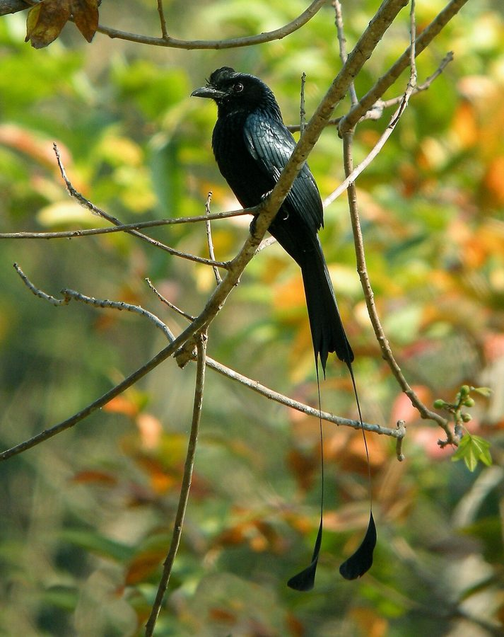

भीमराजGreater Racket-tailed Drongo
Dicrurus paradiseus · Dicruridae · BRD-0315

- Scientific name वैज्ञानिक नाम
- Dicrurus paradiseus (Linnaeus, 1766)
- Family कुल
- Dicruridae
- Hindi हिंदी
- भीमराज
- Local names स्थानीय नाम
- bhimraj, bhringraj, greater racket-tailed drongo
- Status here यहाँ की स्थिति
- native
- Movement आवागमन
- Resident, here all year
- Known from कहाँ दर्ज
- Others have published records from the Basti–Ayodhya districts बस्ती–अयोध्या के ज़िलों से दूसरों के प्रकाशित अभिलेख
- IUCN IUCN
- LC
- Review समीक्षा
- not yet reviewed
When to look कब देखें
Present all year. साल भर मौजूद।
Tell it apart from इनसे अलग पहचानें
भीमराज / Greater Racket-tailed Drongo
Dicrurus paradiseus (Linnaeus, 1766) — Dicruridae
भीमराज — उत्तर भारत के तराई और साल के जंगलों में रहने वाला एक अत्यंत चतुर, फुर्तीला और आकर्षक पक्षी है, जो अपने पूंछ के दो लंबे तारों जैसे पंखों और उनके सिरों पर लटके चपटे 'रैकेट' के लिए प्रसिद्ध है। इसके माथे पर आगे की ओर मुड़ी हुई सुंदर कलगी होती है और पूरा शरीर चमकीले नीले-काले रंग का होता है। यह जंगल में मिश्रित शिकार दलों (हंटिंग पार्टियों) का नेतृत्व करता है और दूसरे पक्षियों तथा शिकारी जानवरों की आवाजों की सटीक नकल करने में माहिर है।
Quick Identification त्वरित पहचान
| Feature | Description |
|---|---|
| Habit | Highly active arboreal drongo inhabiting mid-story and canopy of moist forest |
| Plumage | Entirely glossy blue-black with metallic sheen on crest and breast |
| Crest | Prominent tuft of backward-curved frontal feathers above base of bill |
| Tail | Outer tail feathers elongated into bare shafts tipped with twisted spatulate rackets |
| Bill | Heavy, arched, black with bristly rictal setae at the gape |
| Eyes | Deep red to reddish-brown in mature adults |
| Flight Pattern | Undulating, graceful flight with the trailing rackets streaming behind |
Field tip: Watch along forest tracks and openings in moist sal jungle. The conspicuous backward-curving crest on the forehead and two very long bare tail streamers ending in flat twisted webs distinguish this drongo instantly from all other forest birds.
हिंदी:
इसके माथे पर मुड़ी हुई कलगी और पूंछ में दो लंबे पतले तारों के अंत में लटके हुए चपटे पंख होते हैं।
पूरा शरीर गहरे चमकदार काले रंग का होता है और आंखें लाल होती हैं।
उड़ते समय इसके पूंछ के दोनों रैकेट हवा में तैरते हुए दिखाई देते हैं।
Morphology आकारिकी
Measurements as given by Baker (1924 as "Dissemurus paradiseus"):
| Measurement | Range |
|---|---|
| Wing | 155–182 mm (Baker 1924) |
The Greater Racket-tailed Drongo is a distinctive passerine with extraordinary ornamental tail modifications. The entire plumage is deep black with a bright metallic bluish-green sheen, most pronounced on the crown crest, mantle, throat, and upper breast.
The forehead bears a well-developed frontal crest consisting of elongated feathers that curve backward over the crown. The bill is stout, hooked at the tip, and clothed at the base with dense, forward-pointing rictal bristles.
The most celebrated feature is the outer pair of tail feathers (rectrices), which are greatly elongated into thin, wiry, bare shafts extending far beyond the squared central tail. At the tip of each bare wire, the vanes form a broad, oval, twisted spatula or racket that spirals horizontally in flight.
The iris is crimson or blood-red in adults. The bill, legs, and feet are jet-black.
Vocalisations. Renowned as one of the finest songsters and mimics in the Asian forest. Its natural repertoire includes clear, metallic, bell-like whistles, harsh scolding calls, and flawless imitations of raptors and other birds.
हिंदी:
इसके पंखों की लंबाई 155 से 182 मिमी होती है।
इसकी पूंछ के दो बाहरी पंख बहुत लंबे तारों में बदल जाते हैं जिनके सिरों पर चपटे मुड़े हुए पंख लगे होते हैं।
यह जंगल में विभिन्न पक्षियों और जानवरों की सटीक नकल करने के लिए जाना जाता है।
Behaviour & Ecology व्यवहार और पारिस्थितिकी
Dicrurus paradiseus is an aggressive and dominant bird of the forest mid-story. It regularly acts as the nucleus and sentinel for mixed-species foraging flocks, associating with babblers, woodpeckers, and flycatchers. As other flock members flush insects from the foliage, the drongo swoops down to capture displaced prey.
It frequently produces deceptive alarm calls, mimicking raptor warning cries to cause other birds to drop their captured food, which the drongo then promptly steals. Despite this kleptoparasitic habit, other birds tolerate its presence because its genuine alarm calls provide reliable early warning against genuine predators.
हिंदी:
यह पक्षी जंगल में दूसरे पक्षियों के झुंड के साथ मिलकर शिकार करता है।
यह कभी-कभी बाज की झूठी आवाज निकालकर दूसरे पक्षियों को डरा देता है और उनका खाना छीन लेता है।
Life Cycle / Phenology जीवन चक्र
Baker (1924, p. 379) records that this drongo breeds during April and May from the plains up to about 4,500 feet in the Himalayan foothills. The nest is a cradle swung in a horizontal branch fork high up in a forest tree, constructed of twigs, roots, and plant fibres bound with cobwebs. Both parents share in nesting duties and caring for the brood.
हिंदी:
बेकर (1924) के अनुसार इसका प्रजनन काल अप्रैल और मई में होता है। यह ऊंचे पेड़ों की दोमुंही डालियों पर मकड़ी के जालों और पतली टहनियों से झूला-नुमा घोंसला बनाता है। दोनों माता-पिता बच्चों की देखभाल करते हैं।
Host Plants or Prey आहार
The Greater Racket-tailed Drongo is an opportunistic insectivore that captures prey in aerial sallies and gleans from canopy foliage:
- Flying termites and winged ants during seasonal swarming
- Beetles, large cicadas, and mantises plucked from branches
- Moths and butterflies pursued in agile aerial acrobatics
- Grasshoppers, dragonflies, and small tree crickets
- Nectar from flowering forest trees including Bombax ceiba and Butea monosperma
It frequently perches on exposed branches along forest canopy gaps, launching into swift looping dives after passing insects.
हिंदी:
यह हवा में उड़ते हुए कीड़े, तितलियां, टिड्डे और दीमक पकड़कर खाता है।
यह सेमल और पलाश के फूलों से मकरंद भी चूसता है।
Predators / Natural Enemies शत्रु
Hawks, owls, and tree-climbing carnivores take birds of this size. No source opened for this atlas names a specific predator of this species.
हिंदी:
शिकारी बाज, उल्लू और पेड़ों पर चढ़ने वाले मांसाहारी जानवर इस आकार के पक्षियों का शिकार करते हैं। इस एटलस के लिए देखे गए किसी स्रोत में इसके किसी विशिष्ट शिकारी का नाम दर्ज नहीं है।
Agricultural / Human Relevance कृषि प्रासंगिकता
The Greater Racket-tailed Drongo is an aerial insectivore, feeding on beetles, cicadas, winged termites, and moths caught in flight (Baker 1924, p. 379). It is protected under the Wildlife (Protection) Act, 1972.
हिंदी:
ग्रेटर रैकेट-टेल्ड ड्रोंगो एक हवाई कीटभक्षी पक्षी है, जो हवा में उड़ते हुए भृंगों, झींगुरों, दीमक और पतंगों को खाता है (बेकर 1924)। यह वन्यजीव (संरक्षण) अधिनियम, 1972 के तहत संरक्षित है।
Expected Locally स्थानीय रूप से अपेक्षित
Not a field record. Written from published accounts for eastern Uttar Pradesh. No confirmed local sighting yet — if you have seen it, that is what the atlas needs.
अभी तक स्थानीय पुष्टि नहीं। यह विवरण प्रकाशित स्रोतों से है, किसी अवलोकन से नहीं।
Look along shaded tracks, old sal stands, and overgrown canal bunds in moist woodland tracts.
GBIF holds published records from these districts.
A first record would be a photograph of the bird with place and date, sent through the About page.
Distribution वितरण
Global range: Widespread resident across the Oriental region, from India and Sri Lanka eastwards across southern China, Indochina, and the Indonesian archipelago.
Regional status: Resident in the moist deciduous sal forests of the Terai and adjacent wooded tracts in northern Uttar Pradesh, including Dudhwa, Katarniaghat, and Sohelwa reserves.
हिंदी:
यह भारत, श्रीलंका, म्यांमार और दक्षिण-पूर्व एशिया के घने वनों में पाया जाने वाला स्थायी पक्षी है।
Research Questions शोध प्रश्न
- How accurately does Dicrurus paradiseus mimic the warning calls of different sympatric bird species in northern Uttar Pradesh? / क्या भीमराज अलग-अलग पक्षियों की चेतावनी भरी आवाजों की हूबहू नकल कर लेता है?
- What proportion of its daily food intake is acquired through false alarm calls and kleptoparasitism in mixed foraging flocks? / झूठी चेतावनी देकर दूसरे पक्षियों का खाना छीनने से इसे कितना भोजन प्राप्त होता है?
- How do the aerodynamic drag properties of the tail rackets affect high-speed manoeuvres during aerial insect chases?
- What tree species are preferred for nest placement in secondary moist deciduous forests?
- Can citizen birders identify unique mimicry repertoires of individual drongos through acoustic monitoring? (Field recordings of morning vocalizations can reveal local dialect diversity.)
Similar Species मिलती-जुलती प्रजातियाँ
| Species | How to tell apart | हिंदी | |
|---|---|---|---|
| [[black_drongo\ | Black Drongo]] (Dicrurus macrocercus) | Smaller size; lacks the frontal crest; tail is deeply forked but lacks elongated racket streamers; frequents open fields | भुजंगा |
| [[ashy_drongo\ | Ashy Drongo]] (Dicrurus leucophaeus) | Slate-grey plumage with no metallic blue gloss; deeply forked tail without rackets; bright red eyes | स्लेटी भुजंगा |
Field rule: The prominent forward-curving forehead crest and twin long bare tail wires tipped with twisted flat rackets distinguish the Greater Racket-tailed Drongo from all other drongo species.
हिंदी:
भुजंगा खुले खेतों में रहता है और उसकी पूंछ में लंबे तार और रैकेट नहीं होते; स्लेटी भुजंगा सलेटी रंग का होता है।
Taxonomy & Classification वर्गीकरण
Original description. Described by Carl Linnaeus in 1766 in the 12th edition of Systema Naturae (vol. 1, p. 172), under the basionym Cuculus paradiseus. Formerly placed under "Dissemurus paradiseus" by Baker (1924).
Subspecies. Nine subspecies are recognized across Asia; the northern Indian population inhabiting the Himalayan foothills and Terai is Dicrurus paradiseus grandis (Gould, 1836).
Family and order placement. Order Passeriformes; family Dicruridae (drongos).
IUCN status rationale. Evaluated as Least Concern (LC) by the IUCN Red List due to an extremely large geographical range and stable wild populations across intact forest habitats.
हिंदी:
लिनिअस ने 1766 में इसका वर्णन किया था। यह डिक्रुरिडे कुल का सदस्य है और प्रकृति संरक्षण की दृष्टि से सुरक्षित माना जाता है।
Photo Gallery फोटो गैलरी
No photos yet — add field photos to media/species/greater_racket_tailed_drongo/ and run node scripts/sync_photos.js.
Photos needed आवश्यक फोटो
- [ ] Adult perched showing crest and extended tail rackets (शाखा पर बैठा वयस्क पक्षी कलगी और रैकेट सहित)
- [ ] Bird hawking flying insects over forest fireline (जंगल में कीड़ों का शिकार करता पक्षी)
References संदर्भ
- Linnaeus, C. (1766). Systema Naturae per Regna Tria Naturae, ed. 12, vol. 1. Laurentii Salvii, Holmiae, p. 172 (as Cuculus paradiseus).
- Baker, E. C. S. (1924). The Fauna of British India, Including Ceylon and Burma. Birds. Vol. 2. Taylor & Francis, London, p. 379 (as "Dissemurus paradiseus").
- Ali, S. & Ripley, S. D. (1987). Compact Handbook of the Birds of India and Pakistan. Oxford University Press, New Delhi.
- Grimmett, R., Inskipp, C. & Inskipp, T. (2011). Birds of the Indian Subcontinent. 2nd ed. Christopher Helm, London.
- BirdLife International (2024). Dicrurus paradiseus. The IUCN Red List of Threatened Species 2024: e.T103711109A264356494.
- GBIF Occurrence Data — Dicrurus paradiseus (Linnaeus, 1766), India (2025).
Source file: species/fauna/birds/greater_racket_tailed_drongo.md